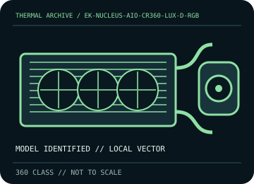

[ INDIVIDUAL COMPONENT // COOLING ]
EK-Nucleus AIO CR360 Lux D-RGB
360 mm D-RGB AIO with a 400 × 124 × 27 mm radiator, EK-FPT fans, and a rotatable pump top.

IDENTIFICATION: Match the complete model, regional SKU, revision, and supplied socket kit. Similar names and radiator classes do not guarantee identical brackets, dimensions, leads, or warranty terms.
Manufacturer specifications and compatibility
| Exact model / listing | EK-Nucleus AIO CR360 Lux D-RGB |
|---|---|
| Radiator dimensions and thickness | 400 × 124 × 27 mm aluminum radiator; nominal 360 mm class. Allow about 52 mm for radiator plus 25 mm fans before fittings. |
| Fans | 3 × 120 × 25 mm EK-FPT D-RGB fans, 550–2,300 rpm ±10%; 4-pin PWM and 5 V addressable lighting. |
| Pump / block | PWM-controlled pump, approximately 3,100 rpm ±10%; rotatable D-RGB top and copper cold plate. |
| Supported CPU sockets | Intel LGA 1150 / 1151 / 1155 / 1156 / 1200 / 1700 / 1851 / 2011 / 2011-3 / 2066; AMD AM4 / AM5. Verify exact bracket inclusion for SKU/revision. |
| Tube length / construction | 400 mm low-evaporation sleeved rubber tubing with swivel fittings at the block. |
| Power, fan, lighting, and display connectors | 4-pin PWM pump/fan leads and 5 V 3-pin D-RGB; fans support daisy-chain/OmniLink cabling. Keep 5 V D-RGB away from 12 V RGB headers. |
| Warranty | EK warranty duration can vary by product and region; verify the CR360 Lux D-RGB SKU’s current EK warranty terms before purchase and retain proof of purchase. |
| Case compatibility | Requires a 360 mm radiator mount and at least 52 mm for radiator/fans, plus the radiator width of 124 mm, fittings, and hose turn. Check case rail and motherboard/RAM/VRM/GPU obstruction. |
| Motherboard compatibility | Use the matching Intel/AMD retention hardware. Reserve PWM and 5 V D-RGB connections or a compatible controller, and observe board/controller electrical limits; never assume a 12 V RGB header is compatible. |
Warranty, maintenance, and safe installation
Closed-loop AIO: do not open or refill. Remove dust only with power disconnected and fan blades restrained; inspect sleeving, swivel fittings, and joints. Stop use if coolant escapes or pump/fan behavior indicates failure.
- Install only with the model-specific manual and included retention hardware. Do not operate a pump dry or allow tubes to kink or rub against sharp edges.
- After installation, verify pump and fan tachometer/control operation and monitor CPU temperature under a repeatable load before normal service.
- Warranty statements are a reference, not a substitute for current regional terms; preserve the serial number and purchase record and contact the manufacturer for service.
Manufacturer sources
- EK — EK-Nucleus AIO CR360 Lux D-RGB specificationsManufacturer product dimensions, pump, fans, sockets, wiring, and accessories.
- EK — EK-Nucleus AIO CR360 Lux D-RGB installation manualModel-specific installation and wiring manual; verify that instructions match the purchased revision.
Static catalog reference only. Verify the precise SKU, manual revision, and current local warranty documentation before installation.